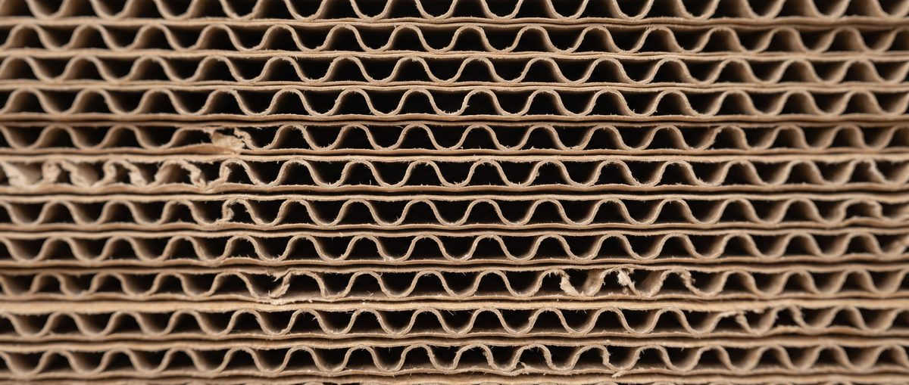

A brand system for a company that doesn't exist
I'm proud of work I'm not allowed to show. So I built a company I could.
CambiumPak is invented. I'm proud of the work I did for my employer and I can't show you any of it — it's confidential. So I designed an imaginary company with a similar structure and similar needs, and built the same systems and tools there that I built for my employer. Every CambiumPak product, figure, certification mark and test result is made up.
The site is live at cambiumpak.com — eleven product families, seventeen SKUs, forty-four documents.
The design system, and the four I didn’t choose
CambiumPak’s look was built with Claude across two days, with me editing rather than accepting. Push it around: change the green to sky blue or burnt orange, change the typeface, drop the photography to black and white. Every surface below moves at once, because they all read the same tokens. The panel argues back. Two of the four alternatives are eliminated by measurement. The other two are not, and that is the more interesting half.

Corrugated mailer
Roll-end tuck-front, one-piece
band 70–100
| Board grade, 0806 / 1209 | 32 ECT B-flute kraft |
| Board grade, 1814 | 44 ECT BC-flute kraft |
| Burst strength | 1,400 kPa |
| Internal, L × W × D | 305 × 229 × 76 mm |
CambiumPak is invented and so is everything in it. The numbers above are computed live, not looked up: WCAG relative luminance for contrast, CIEDE2000 for colour separation, and the Viénot, Brettel and Mollon 1999 transform to simulate protanopia and deuteranopia. Photography is from Unsplash under its own license. Moss stays green whatever you pick, because Moss carries recycled-content figures and nothing else. It is not the accent’s to change, and watching the 90% hold while every other surface moves is brand rule two made visible. The duotone is an SVG filter built from whichever accent is currently selected, which is why the pictures move when the colour does.
why it exists
Two of the tools I built for my employer make the same claim: brand compliance enforced by code. That claim is invisible without a brand to be compliant with. I can't publish my employer's, so I needed one I could.
the constraint that shaped everything
It had to look nothing like my own brand. No rose, no plum, no ivory, no Space Grotesk. If a generated deck came out in my palette, the demo quietly says "my tool makes things in my style" — when the real claim is that it applies somebody else's system. The contrast between this page's chrome and a CambiumPak artifact sitting inside it is the demonstration.
Second constraint: sober mid-market B2B. Competent, unfashionable, faintly conservative. If it looks too designed, it reads as a branding exercise rather than an operations tool.
naming took longer than the mark
Ten candidates checked; the eight worth showing are below. Real words in an established industry are almost always taken.
| name | why it was rejected |
|---|---|
| Terrapak | Real twice — two live packaging companies. Also one letter from Tetra Pak. |
| Gaiapak | Three existing packaging companies using Gaia. |
| Mycelia Packaging | Mycelium packaging is a material category, not a brand — like naming a box maker "Corrugated Box Co." |
| Terracrate | Sits next to TerraCycle and Terravive, both real sustainable packaging. |
| Mossbank | "Moss Packaging" exists. |
| Coppice | Coppice Alupack, and coppice.net. Both packaging. |
| Understory | Real company, plus a retail shop. |
| Loamfold | Free. Built under it first, then superseded. |
| CambiumPak | Cambium is the living layer under bark that makes new wood. Bare "Cambium" is crowded in materials — the -Pak suffix is what makes it read as a distinct entity. No existing Cambium uses it. |
The near-miss on Terrapak is the one worth remembering: same industry, one letter from a global brand. That's the failure mode — not picking a name nobody has, but picking one that reads as a knock-off of someone who has lawyers.
the mark
Four half-rings on two centres, offset along a shared vertical seam. It reads three ways at once: growth rings, a taped carton seam, and a C over a P in the counters.
Lockups
three approved · nothing else is legal
The flat ends against the seam are the whole idea. The stroke caps are butt, not round. A round cap closes the gap and turns it into a generic swirl — it stops reading as a seam and stops reading as letterforms. It's one attribute and it's the difference between this mark and a thousand others.
The real constraint was reproduction: it had to survive being stamped in one colour on brown corrugated board. That kills gradients, hairlines, tight counters, and anything needing a second ink. It also has to hold at 12mm on a tape roll and 2m on a trade-show banner. Designing for the worst substrate first is why the mono lockup isn't an afterthought.
the palette, and the one colour with a job
Tokens
one grotesque, two weights · no display face
Moss is the one to protect. It carries a single meaning — recycled-content percentages — and nothing else. A moss-coloured number that isn't a recycled percentage is a defect, not a style choice.
That rule caught something real in production. The bar charts on the spec sheets are Pine, not Moss, even though Moss would have looked better against the kraft. They aren't recycled figures, so they don't get the colour. A rule that never costs you anything isn't doing any work.
five certification marks, all invented
This is the part that mattered most to get right. FSC, BPI Compostable, How2Recycle, SFI and ISTA are real trademarks belonging to real standards bodies. Putting any of them on a fictional company's spec sheets would be trademark misuse on a public portfolio.
So they were removed and replaced with five invented ones, none confusable with a real mark.
The set
14mm square, single colour · they sit in a row along the foot of a spec sheet
They share a stroke weight and a corner treatment so they read as a set — which a real certification row never does, and making them cohere is what sells the whole thing.
The rule underneath them is the interesting part. A family-level badge row shows the intersection of its members' marks, never the union. If two tape codes hold ChainMark and the third doesn't, the family claims neither — it claims only what every SKU can support, and the difference is disclosed in a note. A site that shows the union is making a claim two-thirds of the range can't back. That's exactly the class of error the tooling is supposed to prevent, so getting it right here is the demo working rather than arguing against itself.
the rulebook
Five rules
three of them are enforceable in code, and are
The mark is never recoloured, rotated, or set on a busy photograph. On anything darker than Paper, the reversed lockup is the only legal one.
Kraft carries SKUs and rules. Moss carries recycled figures and nothing else. One accent, one meaning.
Certification badges are resolved from the SKU record, never placed by hand.
Every dimension is stated internal, in millimetres, in L × W × D order.
Recycled content is banded, never implied. 0–39, 40–69, 70–100.
Rules 3, 4 and 5 are checked by the build. The site fails CI if a rendered page or the product record contains any of the five real certification body names — a check that exists because one slipped in early and I'd rather the build catch it than a hiring manager.
what two days bought
- A mark that works in one ink on brown board, at 12mm and at 2m.
- A palette with one colour under a semantic rule, which has already caught a real defect.
- Five certification marks that read as a set and infringe nothing.
- A rulebook where three of five rules are machine-checked rather than remembered.
- A live site, eleven product families, forty-four documents, deployed with a CI check that fails if the built site drifts from its source record.
what I'd do differently
I built the first version under a different name — Loamfold — before running the trademark search properly. It was free, so nothing was lost, but I'd checked availability after designing rather than before. Ten minutes of searching at the start would have saved redoing the wordmark.
cambiumpak.com
Eleven product families, seventeen SKUs, forty-four downloadable documents. Invented, and it says so on every page.
open to marketing operations, analytics and martech roles
Let's talk.
Remote, or Albuquerque and hybrid. Happy to walk through the architecture behind any of this.